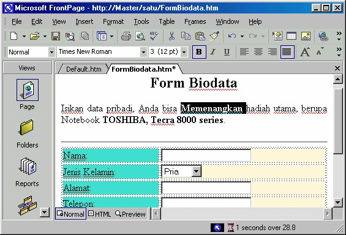
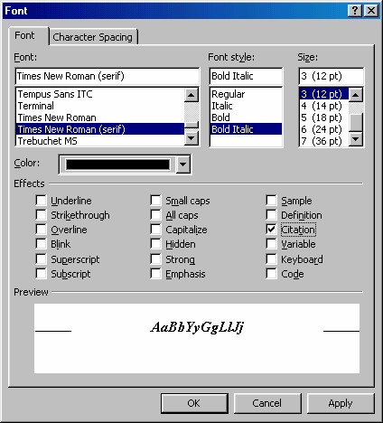
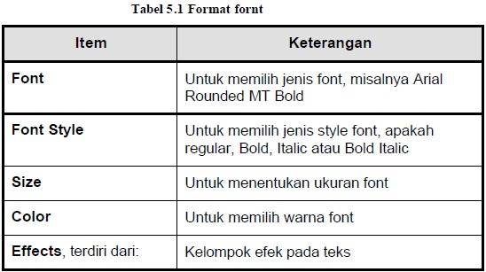
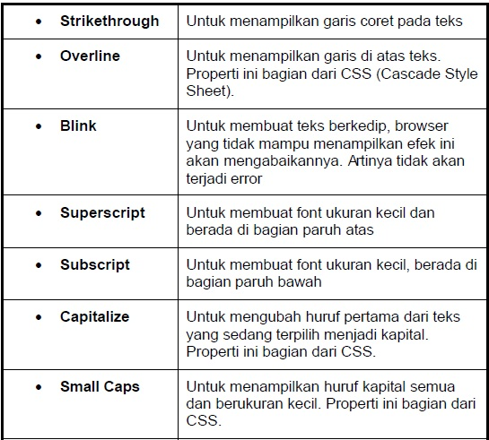
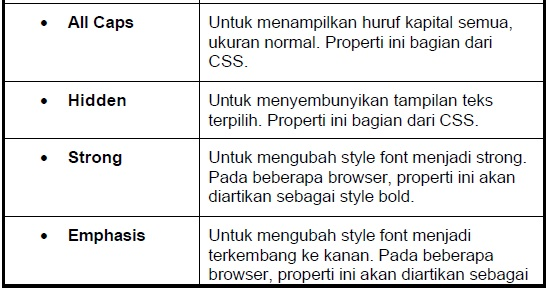
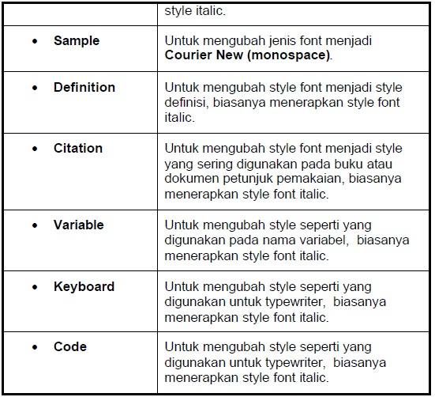

1. Mem-format font
Untuk mengedit font, sebenarnya sudah kita singgung pada bagian terdahulu, yaitu
sewaktu memformat kata pengganti. Kali ini marilah kita kaji lebih jelas perihal
pengeditan font ini. Untuk mengedit suatu font langkahnya adalah:
1. Memilih teks yang akan diedit fontnya, misalnya kata “Memenangkan” seperti
Gambar 5.1.

Gambar 5.1 Kata “Memenangkan” sedang terpilih
2. Kemudian dari menu Format klik perintah Font. Akan tampil kotak dialog Font
seperti Gambar 5.2.

Gambar 5.2 Kotak Dialog Font
3. Dari kotak dialog tersebut kita bisa melakukan beberapa pengaturan. Item
pengaturan, contoh nilai dan hasilnya, lihat Tabel 4.1.




Setelah menentukan pilihan, klik tombol OK. Maka hasil pemilihan Anda akan
diberlakukan pada teks yang terpilih.
Copyright © Herlan Lesmana
Created with the Freeware Edition of HelpNDoc: Free Web Help generator